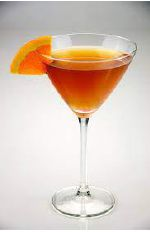

O Side Car é um cocktail elegante e equilibrado que combina a riqueza do conhaque com a acidez cítrica e a doçura do licor de laranja.
Método de Preparo
GuarniçãoNão aplicável. |
 |
Embora não seja 100% confirmado, especula-se que foi inventado no final da Primeira Guerra Mundial, algures em Londres ou Paris. David A. Embury escreveu no seu livro "Fine Art of Mixing Drink" em 1948 que a bebida foi criada por um amigo seu. Ele também nota que o cocktail recebeu o seu nome devido ao sidecar da motocicleta.